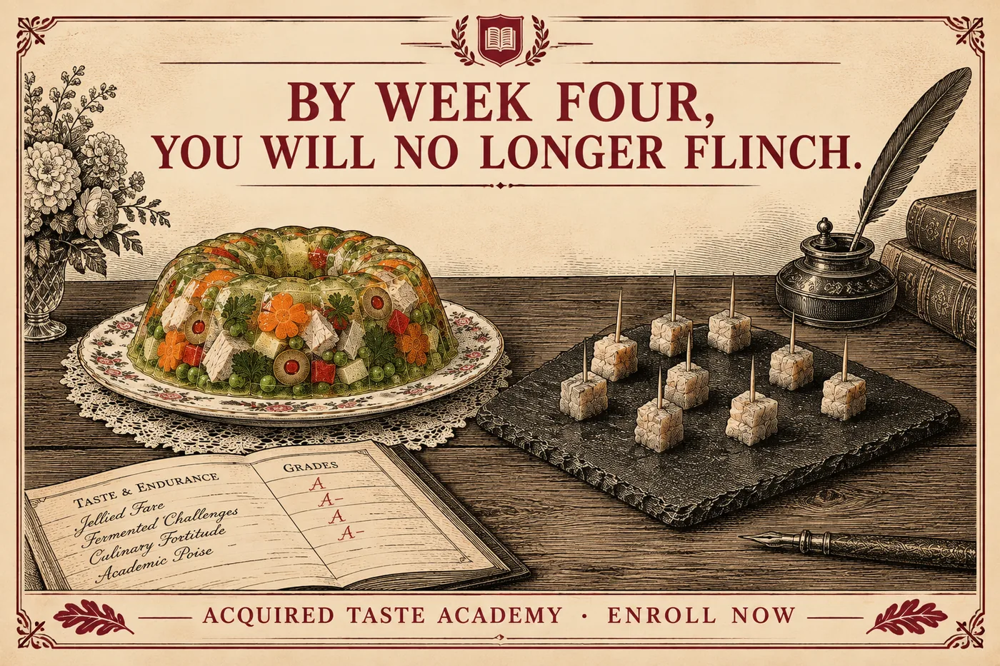
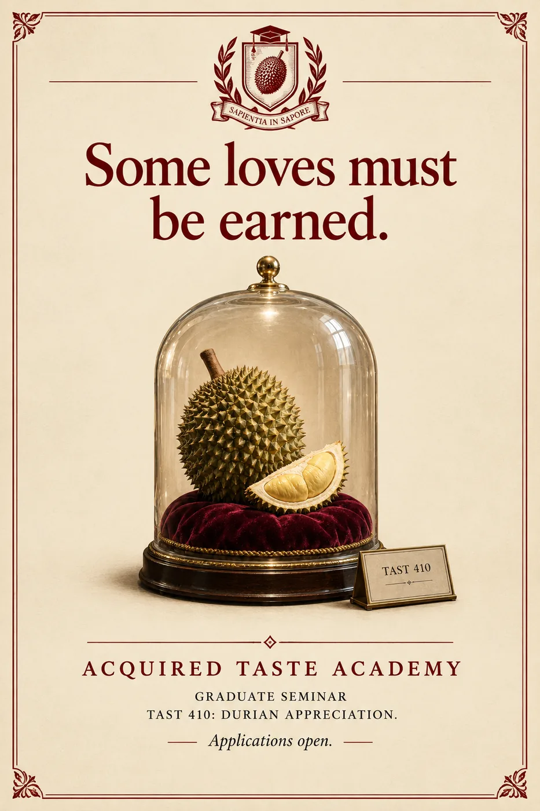
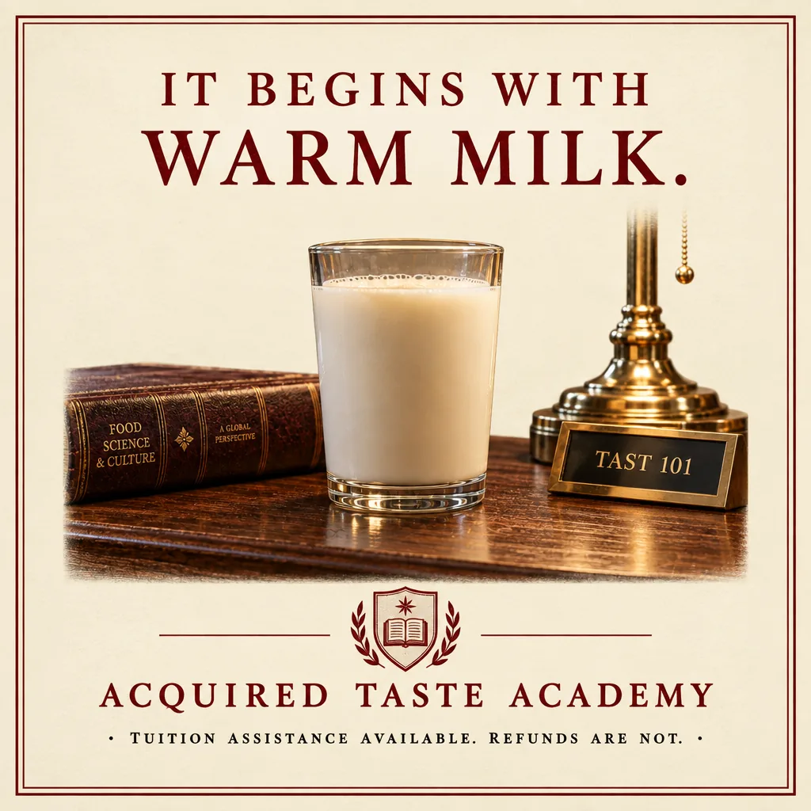

The Academy advertises where its students are found: transit stations near discount grocers, the corkboards of graduate departments, and one bus shelter in Reykjavík that has never once been vandalized, out of respect.


